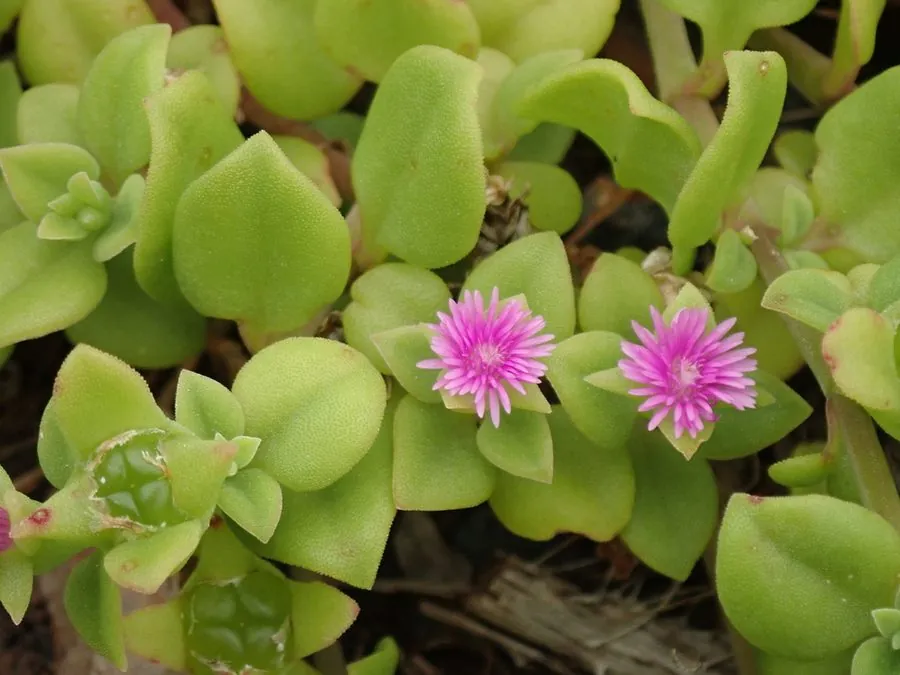

多肉植物 · 植物界
鹿角海棠 Aptenia cordifolia

番杏科鹿角海棠属多肉，茎匍匐、叶片心形对生，冬季开粉红色小花，原产南非，是容易垂吊爆盆的观叶观花多肉。
- 分类
- 门被子植物门纲木兰纲目石竹目科番杏科属鹿角海棠属
- 栖息环境
- 南非东开普省干旱地区的石质坡地与灌丛
- 地理分布
- 原产南非，世界各地盆栽，中国南方常见
- 保护级别
- 暂无评估
物种志
鹿角海棠为番杏科鹿角海棠属的多年生肉质草本，茎匍匐或下垂，长可达 30–60 厘米，节间明显。叶片对生，心形或卵状披针形，长 2–3 厘米，肥厚多汁，表面亮绿色，密布细小水泡状细胞。花单生于叶腋，粉红色或紫红色，形似小菊花，直径约 1.5 厘米，花期冬季至春季；果实为蒴果。
鹿角海棠原产南非东开普省的干旱地区，喜阳光充足、温暖干燥和通风良好的环境，耐旱、怕积水，不耐寒。它茎叶匍匐生长，容易垂吊爆盆，冬季开出成片粉花，适合吊盆或地被栽培。栽培用排水良好的沙质土，生长期干透浇透，冬季保持 10℃ 以上；繁殖以茎段扦插为主，剪取健壮茎段插入沙土，很快就能生根。
形态与习性
- 株高茎长 30–60 厘米，匍匐下垂
- 叶片心形对生，肥厚多汁
- 花期冬季至春季，花粉红色
- 光照喜充足阳光，夏季适当遮阴
- 水分耐旱，干透浇透
- 土壤排水良好的沙质土
- 繁殖茎段扦插，极易生根
- 耐寒冬季需保持 10℃ 以上
趣味知识
- 鹿角海棠的叶片对生、形似鹿角，因此得名。
- 它冬季开花，粉红色小花成片开放，是多肉中少见的冬花种类。
- 茎段扦插极易生根，剪一段插进沙土就能成活。